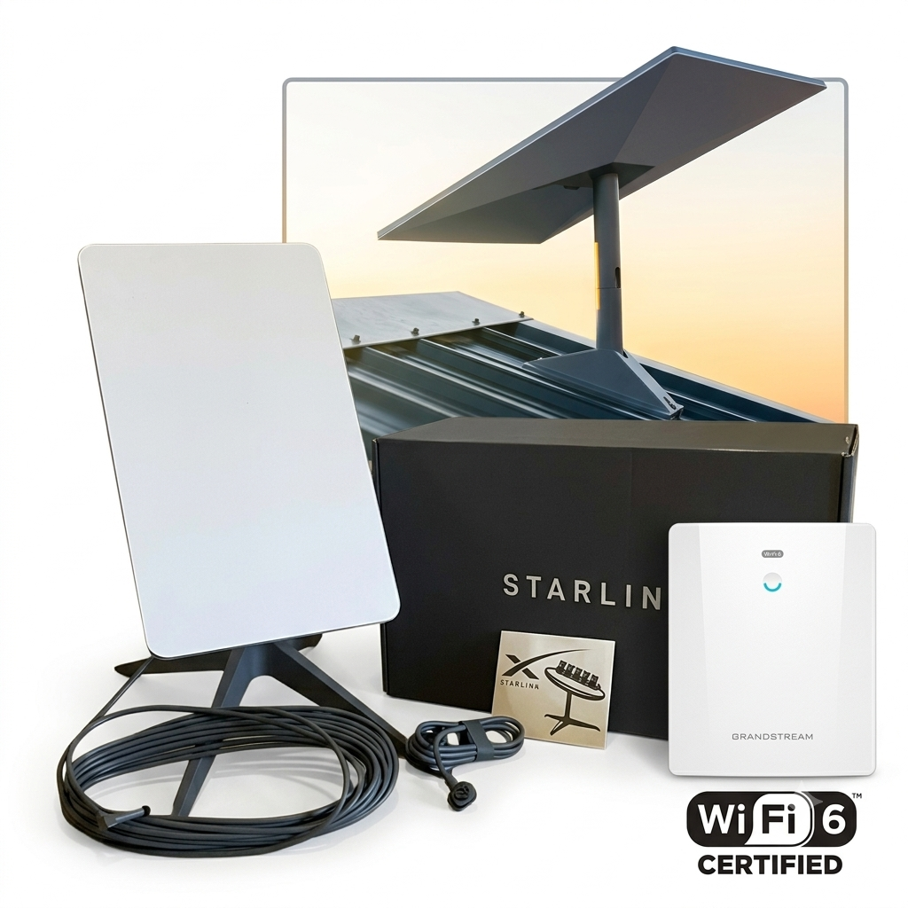

Notre Galerie



Dépannage, suppression de virus, activation système, installation Starlink et assistance rapide. Retrouvez un ordinateur performant dès aujourd'hui.
Forts d'une expertise solide en informatique de gestion, nous accompagnons les particuliers et les professionnels dans la résolution de leurs défis techniques au quotidien.
Notre priorité : la rapidité, l'efficacité et la sécurité de vos données. Que ce soit pour une urgence, une installation réseau (Starlink), une maintenance préventive ou une activation de système, nous répondons présents.
Satisfaction
Intervention
Diagnostic complet, réparation des pannes matérielles et logicielles à distance ou à domicile.
Installation propre et sécurisée de vos suites professionnelles, outils de travail et utilitaires.
Clés d'activation sécurisées pour Windows 10/11 et les suites Microsoft Office.
Nettoyage en profondeur des malwares, spywares et installation d'antivirus performants.
Configuration complète, pose de l'antenne et optimisation du réseau Wi-Fi 6 pour une connexion haut débit stable.
Support technique continu, conseils personnalisés et optimisation des performances de votre PC.

"Service d'activation Windows et installation Starlink ultra rapide ! Connexion parfaite et stable à Doutchi."
"Professionnel et très pédagogue. L'installation de mes logiciels de gestion s'est faite sans aucun problème. Je recommande."
Nous utilisons un logiciel sécurisé (comme AnyDesk ou TeamViewer) qui vous permet de nous partager temporairement votre écran afin que nous réglions le problème sous vos yeux.
Non, toutes nos clés d'activation ne sont officielles, mais temporaires pour la machine sur laquelle elles sont installées.
Oui ! Nous nous occupons du montage de l'antenne, du câblage, de la configuration du routeur Grandstream/Wi-Fi 6 et des tests de débit pour une connexion optimale.
Une urgence informatique ou besoin d'une installation réseau ? Renseignez vos informations ci-contre pour m'envoyer directement votre demande.
Appel : +227 95 74 52 83 / +227 88 43 42 97
Localisation : Dogondoutchi, Dosso, Niger
WhatsApp : +227 88 43 42 97